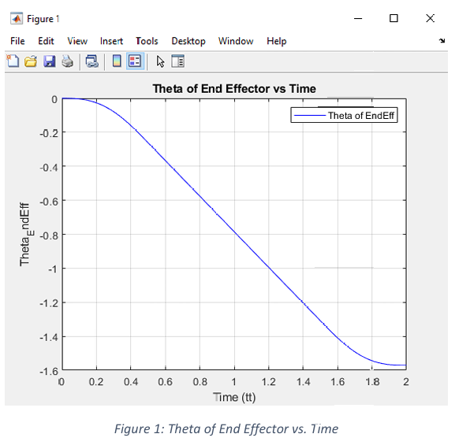
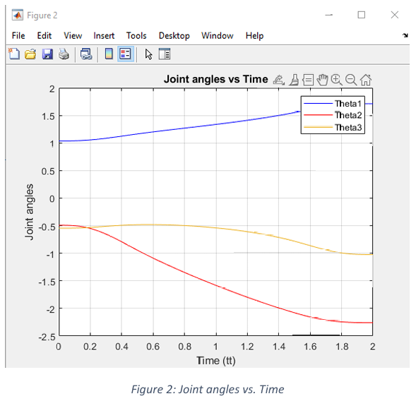
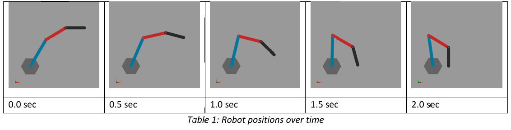
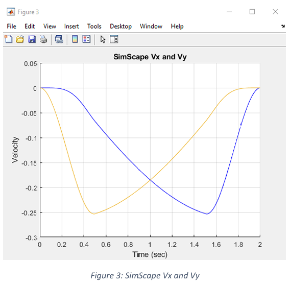
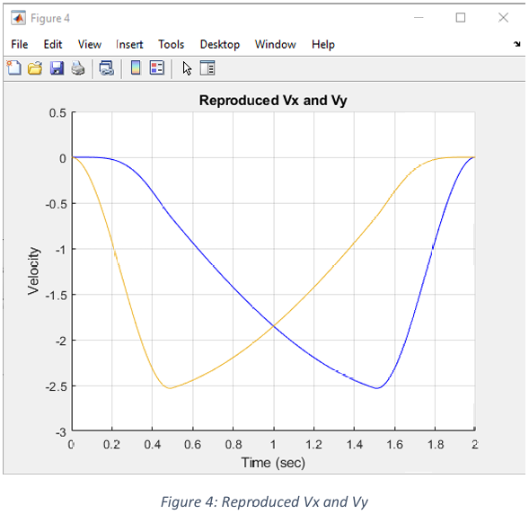
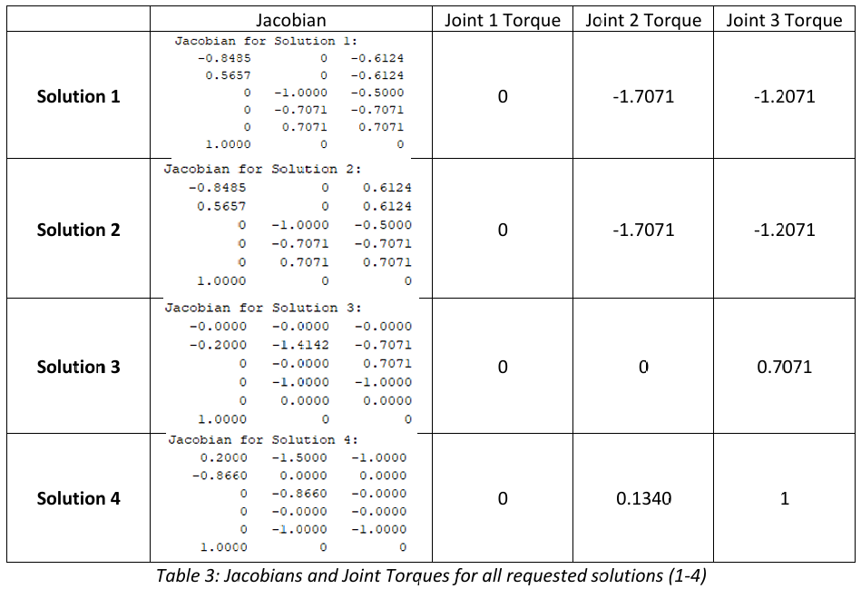
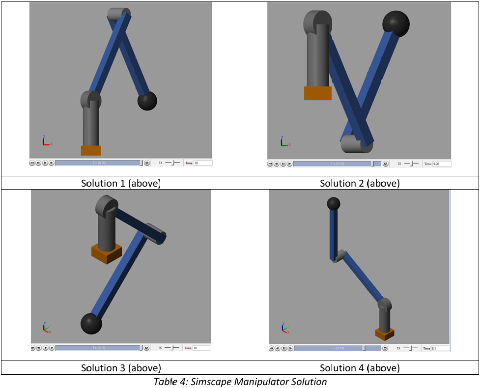

Robot Arm Trajectory Planning
This project covers smooth trajectory planning and static force analysis for robot manipulators, implemented in MATLAB with Simscape Multibody simulation for validation.
The first part of this project was to plan a smooth polishing trajectory along a curved wall for a planar 3R robot. To do this, a fourth-order polynomial trajectory was used to ensure zero velocity and acceleration at the start and end, with a constant velocity phase in between. Inverse kinematics was used to convert the end-effector path into joint angles over time. These joint angles were then plotted in MATLAB to verify smooth motion and check for any major red flags.


Results were then plugged into Simulink which allowed for visualization of the robot arm motion and comparison of numerically differentiated joint angles against end-point velocities computed via the Jacobian.

The robot arm motion looked appropriate. When comparing the endpoint velocity from the reproduced Jacobian and the SimScape model, the resulting graphs looked identical, confirming a successful implementation.


The second part of this project required determining the joint torques needed to keep a simplified PUMA robot stationary under an external wrench. The Jacobian matrix was obtained for each of the postures and used to compute the required torques, with results verified using a SimScape simulator. If the manipulator moved at all, the implementation was considered incorrect.

Using the computed Jacobian solutions, the external force and moment were negated to resist them, the transpose of the Jacobian matrix was taken, and inverse dynamics were used to calculate the joint torques. These values were then input into the Simscape simulator. All three solutions were able to resist the external wrench provided and remained stationary.

- Trajectory planning with fourth-order polynomial profiles
- Forward & inverse kinematics
- Jacobian matrix derivation & velocity analysis
- Static force/torque analysis via virtual work principle
- Rigid body transformations & homogeneous coordinates
- Simscape Multibody simulation & validation
- MATLAB & Simulink integration
Current Location
North of Atlanta, GAUnited States of America